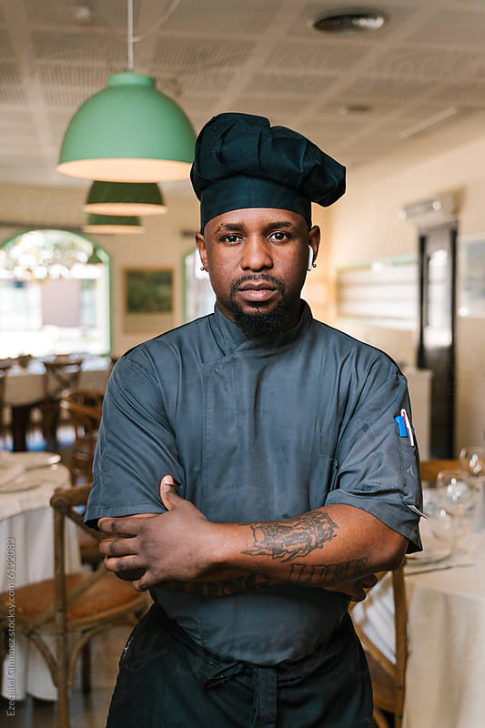
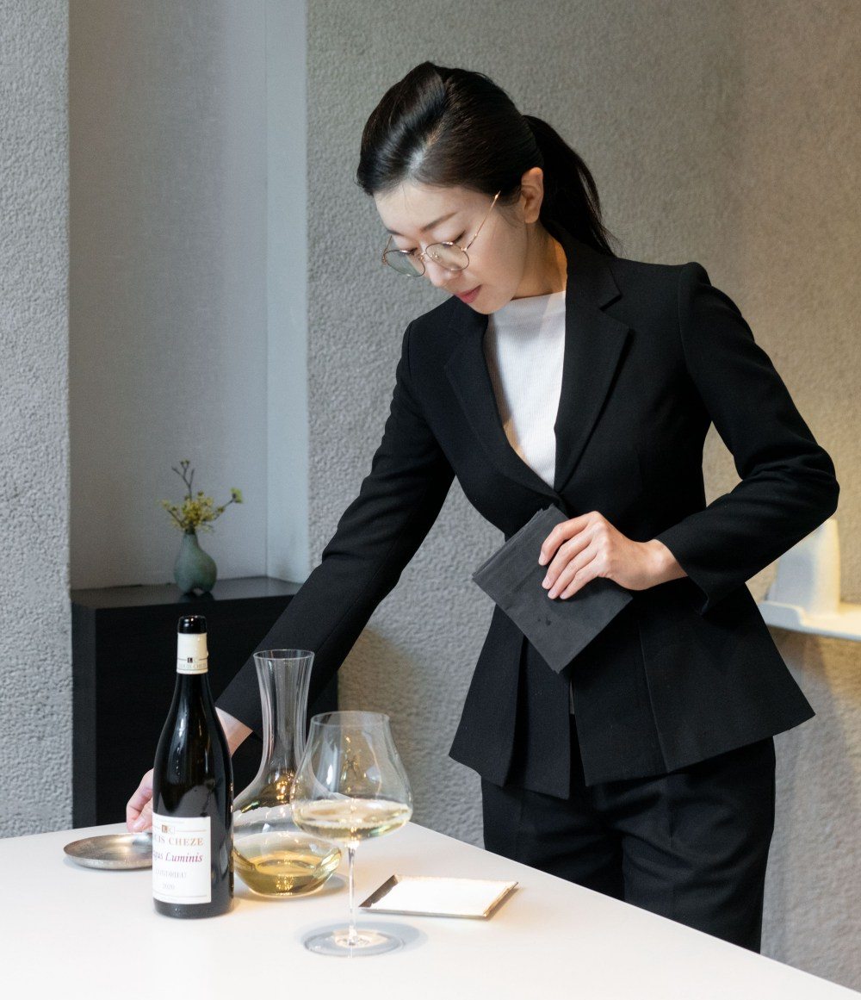
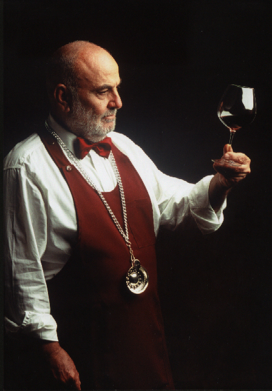
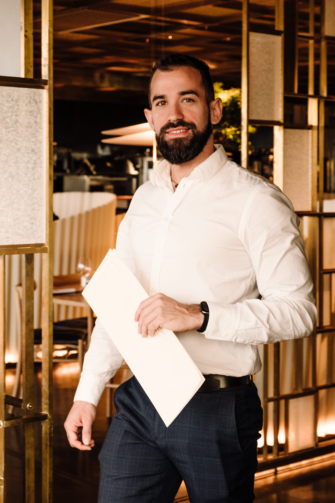
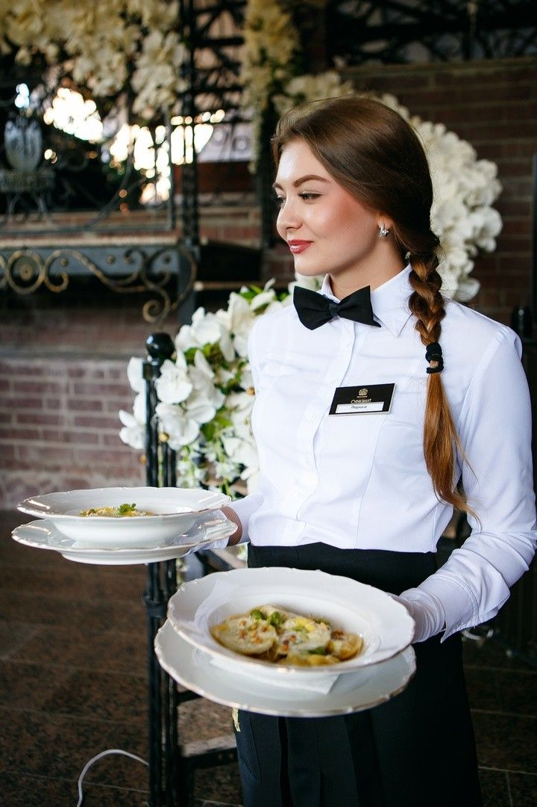

The people behind Azahar
Our team
Twenty-two people, one kitchen and a single obsession: that every guest leaves feeling they have been welcomed into a home.
01 Head Chef
Lucía Morales
Born upstairs from the dining room, Lucía grew up peeling almonds in the kitchen her parents opened in 1998.
After training at the Basque Culinary Center and working at Mugaritz in San Sebastián and Noma in Copenhagen, she returned to Granada in 2014. She became head chef in 2018 and led Azahar to its second Michelin star in 2023.
Her cooking is precise but warm: Andalusian memories presented with Nordic restraint.
- Training
- Basque Culinary Center
- At Azahar since
- 2014
- Awards
- Chef of the Year, Madrid Fusión 2024
02 Kitchen brigade
The heart
of the house
Fourteen cooks working in silence, in an open kitchen visible from the chef's table.
-

Sous Chef
Daniel Ortega
Lucía's right hand for eight years. Runs the service every night and leads our fermentation and preserves room.
-

Pastry Chef
Amira Haddad
Trained in Paris and Marrakech. Her desserts revive the Sephardic and Andalusí sweets of medieval Granada.
-

Chef de Partie · Fire & Grill
Marcos Vílchez
Master of the holm-oak grill. Born in the Alpujarra, he sources our lamb and kid from his family's farm.
03 Sommeliers
Keepers
of the cellar
More than 900 references, from rare sherries to the new wines of the Granada highlands.
-

Head Sommelier
Carmen Ruiz
Best Sommelier of Spain 2021. She designs both wine pairings and has built one of the finest sherry collections in Andalusia.
-

Sommelier
Hugo Lefèvre
From Burgundy to Granada. Hugo curates our non-alcoholic pairing of infusions, kombuchas and pressed juices.
04 Management & front of house
The art
of hospitality
From your first email to the last glass of sherry, they make sure the evening flows.
-

General Manager & Co-founder
Rafael Morales
Co-founder of Azahar in 1998. Still greets every guest at the door, as he has done for almost three decades.
-

Maître d'
Sofía Navarro
Leads a dining room team of six. Ask her about the history of the carmen: she knows every stone.